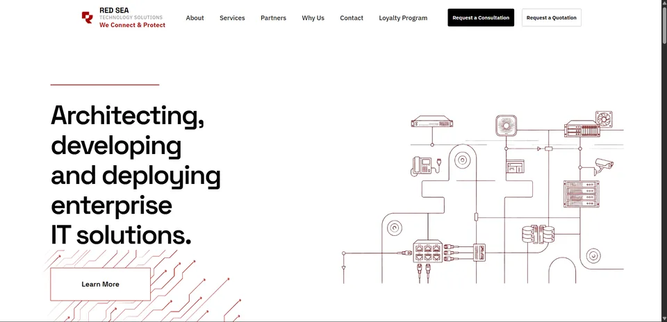
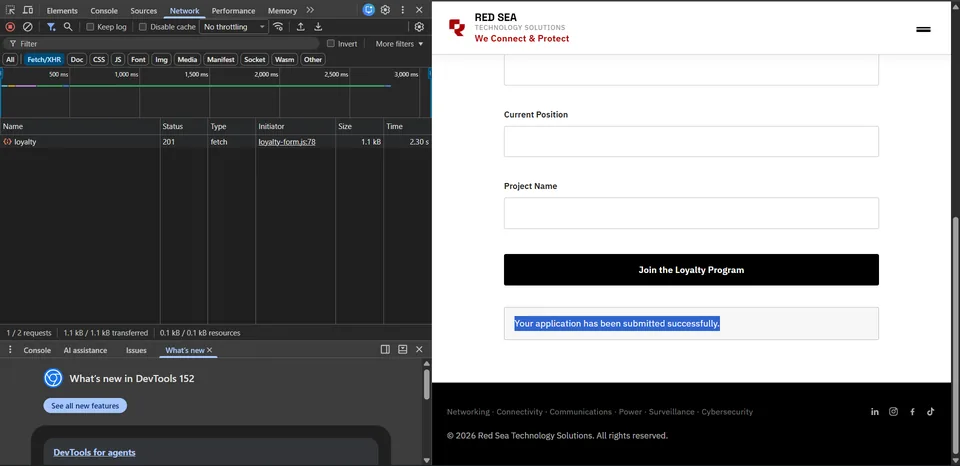

Backend Development / Full-Stack Project
Red Sea Technology Solutions
Loyalty Program Backend & Production API
My First Backend Project — From Frontend Form to Production API
{kind=link}

Overview
This was my first real backend implementation: building the complete application flow for the Red Sea Technology Solutions Loyalty Program. I moved from a frontend form to a production Node.js API, gaining hands-on backend experience across requests, database storage, email integration, and deployment.
My role
I implemented the Loyalty Program backend flow: the Node.js/Express API, database integration, validation, API protection, SMTP notifications, production configuration, and the connection to the frontend. I also tested a real browser submission and verified its database record.
The problem
The website's Loyalty Program form needed a real backend workflow instead of relying on a third-party form service. Applications needed server-side validation, persistent storage, and email notifications, with a direct connection between the frontend and backend.
The solution
I built a REST API that accepts JSON requests from the frontend, validates applications, stores them in MySQL/MariaDB, and integrates email notifications through Nodemailer and SMTP.
- Frontend
- REST API
- Node.js / Express
- MySQL/MariaDB
- Email Notification
Backend implementation
REST API & JSON requests
I built the API with Node.js and Express.js and connected the frontend directly using JSON requests, creating a full-stack workflow from the browser to the server.
Database integration
I designed and implemented the MySQL/MariaDB database and created the loyalty_submissions table to persist Loyalty Program applications.
Validation & API protection
I implemented server-side input validation and request protection, configured CORS for frontend/backend communication, added security headers with Helmet, and used rate limiting to protect against excessive requests.
Email notifications
I integrated Nodemailer with SMTP so the backend workflow could send email notifications for applications.
Production deployment
I configured and deployed the backend as a production Node.js application, then connected the production frontend to the production API. This backend development milestone gave me practical experience with server configuration, deployment, and debugging the complete workflow in production.
End-to-end testing
I tested a real submission from the browser through the API to the database. The request returned HTTP 201 Created, and I verified that the application was actually stored in loyalty_submissions. The submission screenshot below shows the browser's successful response; database storage was checked separately during project testing.
Results & outcome
The production frontend was connected to the production API, and a real test application returned HTTP 201 and was stored in the database. This was my first real backend implementation and a practical milestone toward full-stack development.
What I learned
This project helped me connect API design with the needs of a frontend form. I practiced sending and validating JSON, integrating a database, applying API security controls, and adding SMTP notifications.
Configuring the server, deploying the application, and debugging production requests taught me to verify each step of the flow instead of stopping at a successful frontend interaction. It marks my transition from frontend development toward backend and full-stack development.
Project media
{kind=link}
